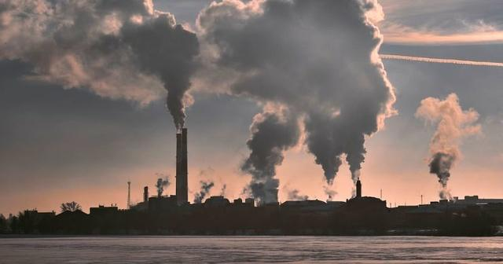

Climate change refers to
br
long-term shifts in temperatures and weather
patterns. These shifts may
be natural and occur, for
example, through changes in the solar cycle.
However
, since the 19th century, human
activities have become
the main cause of
climate change
, mainly due to the
burning of fossil
fuels, such as coal, oil and gas. Burning fossil fuels releases
greenhouse
gases that act like a
blanket
envelope around the world, trapping the sun's
heat and raising temperatures.
Examples of greenhouse gas
emissions causing climate change are carbon
dioxide and methane. These
gases are produced, for example, by using
gasoline to drive cars or coal to
heat buildings.It can in turn rid fields and lands of weeds,
shrubs, and
thinning carbon dioxide. The landfill network is a major
source of methane emissions. Furniture
brand industry consumption, production, production and professional use.
And emissions continue to rise. As a result, the globe is
now 1.1°C warmer
than it was in the late 19th century. And the last decade
(2011-2020) was the warmest on record. Many people
think that climate change basically means warming, but
warming is only the beginning of the story, and because the
Earth is such a
system, where everything is connected, changes in one area may
lead to changes
in all others. The consequences of climate change include, among others,
severe droughts,
water scarcity, severe fires, rising sea levels, floods,
melting of polar ice, catastrophic storms, and degradation of biodiversity.
Climate change is already affecting health in several ways, including causing death and disease from increasingly frequent extreme weather events such as heat waves, storms, and floods, disrupting food systems, and increasing zoonoses, food and waterborne diseases, vectorborne diseases, and mental illness. Health problems.
